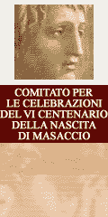

|  |
2 explores the meanings of "program," "programming," "mediaspace," and other poorly understood concepts. 2 will be held 18-19 of May in Moscow, Russiaread_me 1. 2 program will include- presentations by read_me nominees- lectures, performances and shows- parties- workshops- discussions- awards ceremonyand many other things. 2 Macros-center collective willbe glad to help you with papers needed for getting funding or visas. 2 explores the meanings of "program," "programming," "mediaspace," and other poorly understood concepts. |